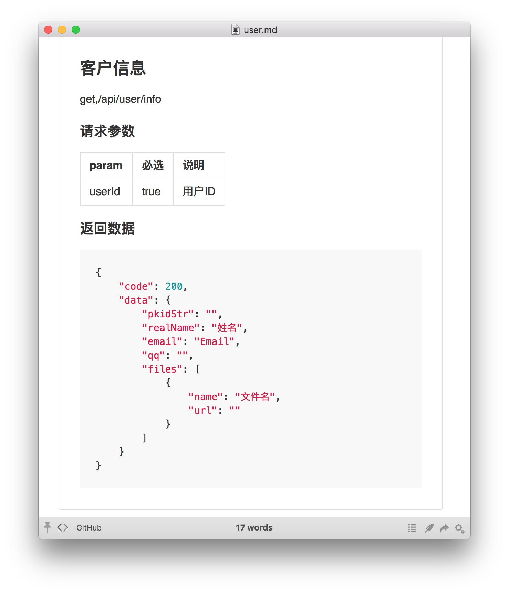

https://github.com/imshenshen/json2SM
做它嘎哈
在做项目，尤其是新项目开发时，通常接口甚至字段还没有定义。 前端同学通常需要等接口文档出来后才能开始大部分功能的开发。此工具想 尽量解决这一问题。为了不引入新的痛点，工具力图简单，快速，方便。 社区已经出现了一些相关工具，但是我的需求还不能得到很好的满足，所以 开始造，存在即合理。
这是什么
这是一个可以通过编写描述文件，自动生成一个APIServer以及自动生成对应 的接口文档的工具。前端同学可以在开发初期使用server返回的假数据开发 部分功能。前后端同学统一维护一组描述文件，实现接口设计变动后，假数据 自动变更，接口文档自动更新。
为了保证工具简单、快速，设定如下：
- 对于APIserver返回的假数据，接口之间不做数据关联，比如保存的接口
name为testName，取数据的接口name字段为任意假数据，跟保存接口无关
- 可以使用ymal文件进行描述，默认值等，能少写东西就少写- -！
情景描述
有一个接口需要获取用户信息，可以写如下描述文件：
1 2 3 4 5 6 7 8 9 10 11 12 13 14 15 16 17 18 19 20 21 22 23 24 25 26 27 28 29 30 31 32 33 34 35 36 37 38 39 40 41 42 43 44 45 46
| route : get,/api/user/info doc: type: markdown path: userInfo/user.md title: 客户信息 params: userId: necessary: true desc : 用户ID result: type: object properties: code: 200 data: type: object properties: pkidStr: realName: desc: 姓名 faker: name.findName sex: type: integer desc: '性别 0保密 1男 2女' pattern: !!js/regexp /[0-2]/ email: desc: Email faker: internet.email qq: pattern: !!js/regexp /[1-9]{6,9}/ isVip: type: integer pattern: "(1|0)" desc: 是否是会员 files: desc: 用户名片 type: array minItems: 0 maxItems: 3 items: type: object properties: name: desc: 文件名 faker: lorem.word url: faker: image.imageUrl
|
使用json2sm -s -p 8877可生成server，请求http://localhost:8877/api/user/info，返回如下：
1 2 3 4 5 6 7 8 9 10 11 12 13 14 15 16 17 18 19 20 21
| { code: 200, data: { pkidStr: "no data", realName: "魏 建辉", email: "_57@gmail.com", qq: "3953858", files: [{ name: "alias", url: "http://lorempixel.com/640/480" }, { name: "sit", url: "http://lorempixel.com/640/480" }, { name: "et", url: "http://lorempixel.com/640/480" }] } }
|
使用json2sm -o build可生成接口文档到build/userInfo/user.md：

功能
- 多个接口输入到1个markdown文档中
- 支持
$include,$extends模板等，参考jade|pug
其他功能、语法、请参见项目说明
参考
- Faker
- randexp
- json-schema-faker